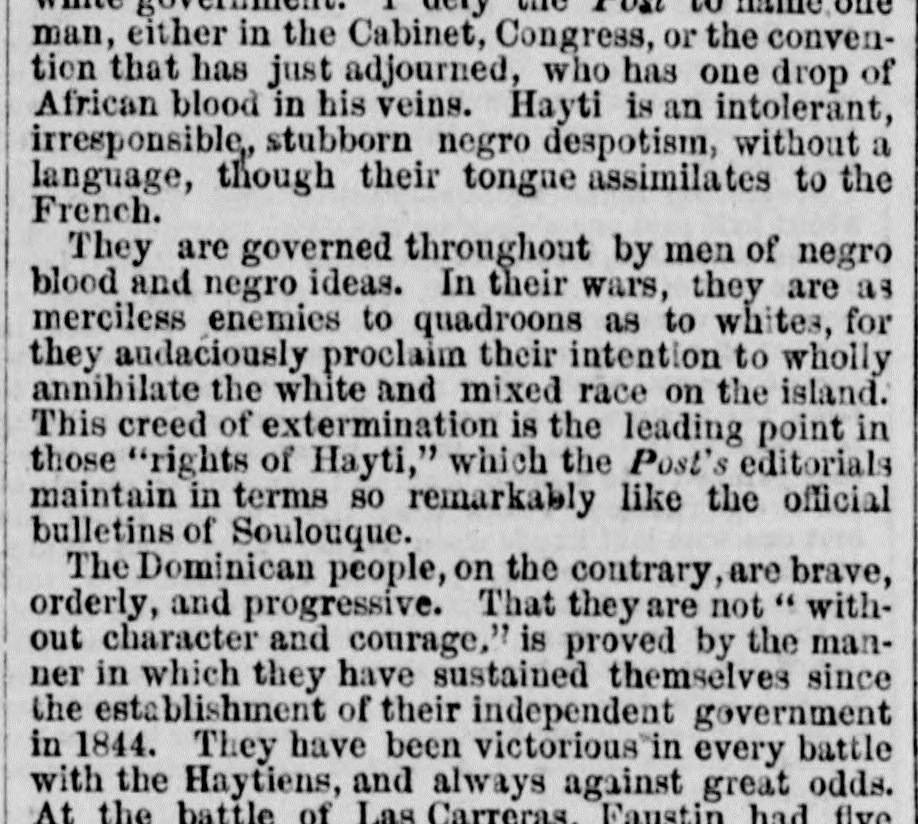
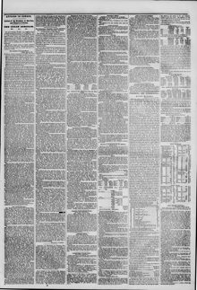

See the full pageVer la página completaThose "rights of Hayti," which the Punt's editorials maintain in termsEsos "derechos de Haití", que los editoriales del Punt sostienen en términos
The June 9, 1854 New York Herald reports that the Dominican people are brave, orderly, and progressive, having successfully sustained their independence since 1844 by winning every battle against the Haytiens despite great odds, such as at the battle of Las Carreras where Santana defeated Faustin. The article states that Haytien emissaries attempted to incite colored Dominicans to murder whites and believe false rumors that Americans were coming to enslave them. Furthermore, the newspaper criticizes an American journal (the Post) for presenting cases in a way that incites insurrection among blacks while defending Hayti's destructive actions.El ejemplar del 9 de junio de 1854 de The New York Herald refiere que el pueblo dominicano es valiente, ordenado y progresista, habiendo sostenido con éxito su independencia desde 1844 al salir victorioso en todas las batallas libradas contra los haitianos pese a la disparidad numérica, como en la batalla de Las Carreras, donde Santana derrotó a Faustino. El artículo señala que emisarios haitianos intentaron incitar a los dominicanos de color a dar muerte a los blancos y dar crédito al falso rumor de que los estadounidenses venían a esclavizarlos. Asimismo, el periódico censura a un diario norteamericano (el Post) por exponer los hechos de un modo que atizaba la insurrección de los negros mientras disculpaba los desmanes destructivos de Haití.
FULL TEXT:TRADUCCIÓN:
They are governed throughout by men of negro blood and negro ideas. In their wars, they are as merciless enemies to quadroons as to whites, for they audaciously proclaim their intention to wholly annihilate the white and mixed race on the island. This creed of extermination is the leading point in those “rights of Hayti,” which the Post’s editorials maintain in terms so remarkably like the official bulletins of Soulouque.Están gobernados en todo por hombres de sangre negra e ideas negras. En sus guerras, son enemigos tan despiadados de los cuarterones como de los blancos, pues audazmente proclaman su intención de aniquilar totalmente a la raza blanca y mixta en la isla. Este credo de exterminio es el punto principal en esos «derechos de Haití», que los editoriales del Post mantienen en términos tan notablemente parecidos a los boletines oficiales de Soulouque.
The Dominican people, on the contrary, are brave, orderly, and progressive. That they are not “without character and courage,” is proved by the manner in which they have sustained themselves since the establishment of their independent government in 1844. They have been victorious in every battle with the Haytiens, and always against great odds. At the battle of Las Carreras, Faustin had fiveEl pueblo dominicano, por el contrario, es valiente, ordenado y progresista. Que no están «sin carácter y coraje», está probado por la manera en que se han sostenido desde el establecimiento de su gobierno independiente en 1844. Han sido victoriosos en cada batalla con los haitianos, y siempre contra grandes desventajas. En la batalla de Las Carreras, Faustino tenía cinco
The New York Herald. New York, June 9, 1854. Page 3.